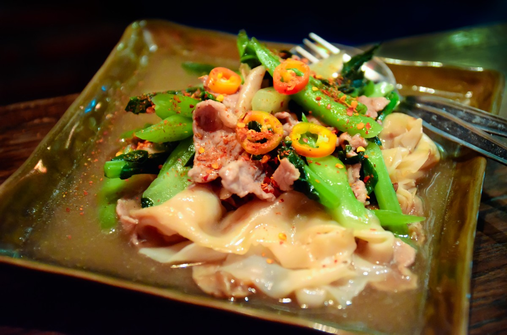
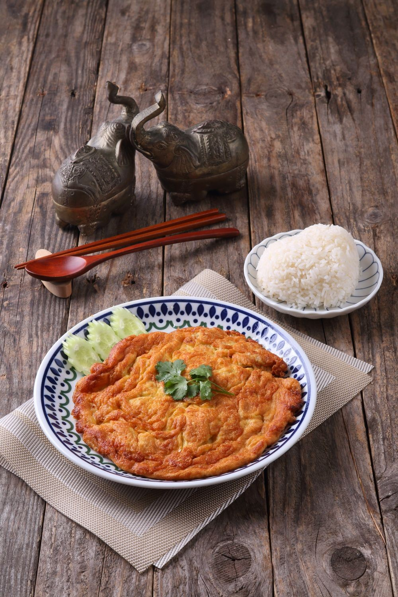

ค้นหา 141 คำค้นผ่าน Openverse ได้ 630 ผลลัพธ์ รวมรายการซ้ำ และค้นเว็บ stock ฟรีเพิ่มเติม ภาพที่ผ่านตรวจและผูกใน catalog: 1 เมนู ยังขาดรูป 91 เมนู ไม่ได้เปลี่ยนฐานข้อมูลที่รันอยู่

Takeaway / CC BY-SA 3.0 — ต้นฉบับ

UNDO KIM / Pexels License — ข้าวเสิร์ฟแยกและยืนยันจำนวนไข่ไม่ได้
| ร้าน / เมนู | รายละเอียดที่ต้องตรง | ผลตรวจ | เหตุผล / แหล่ง |
|---|---|---|---|
| เจริญรส แซ่บทอด อาหารตามสั่ง ข้าวยำไก่แซ่บcmy1m2wcshrjbzew3cgbgkafp | ไก่ทอดกรอบคลุกยำรสแซ่บกับหอมแดงและสมุนไพร เสิร์ฟกับข้าวสวย | ยังไม่มีภาพที่ยืนยันว่าตรงครบ3 คำค้นเฉพาะ photo key | No candidate verified against all named ingredients, sauce, cooking method and rice/noodle presentation; search results are not accepted automatically. |
| เจริญรส แซ่บทอด อาหารตามสั่ง ข้าวยำหมูทอดแซ่บcy6ftid8vszlkckoh8vwdo6bf | หมูทอดกรอบคลุกยำรสแซ่บกับหอมแดงและสมุนไพร เสิร์ฟกับข้าวสวย | ยังไม่มีภาพที่ยืนยันว่าตรงครบ3 คำค้นเฉพาะ photo key | No candidate verified against all named ingredients, sauce, cooking method and rice/noodle presentation; search results are not accepted automatically. |
| เชฟต๋อย ข้าว+ไก่กรอบสโนว์ไวท์cxo6byzvcqnpaxno0ut4ww22w | ไก่ทอดกรอบราดซอสขาวครีมมี่ เสิร์ฟกับข้าวสวย | ยังไม่มีภาพที่ยืนยันว่าตรงครบ2 คำค้นเฉพาะ photo key | No candidate verified against all named ingredients, sauce, cooking method and rice/noodle presentation; search results are not accepted automatically. |
| เชฟต๋อย ข้าว+กะเพราปลาทูc6chb98r09anjf1xbg3hfq2v5 | ปลาทูทอดราดกะเพรารสจัด เสิร์ฟกับข้าวสวย | ยังไม่มีภาพที่ยืนยันว่าตรงครบ2 คำค้นเฉพาะ photo key | No candidate verified against all named ingredients, sauce, cooking method and rice/noodle presentation; search results are not accepted automatically. |
| เชฟต๋อย ข้าว+สะเต๊ะไก่กรอบc7tdhrpo8edvrot9pem8y2523 | ไก่ทอดกรอบราดซอสสะเต๊ะถั่วลิสงผสมพริกแกง เสิร์ฟกับข้าวสวย | ยังไม่มีภาพที่ยืนยันว่าตรงครบ1 คำค้นเฉพาะ photo key | No candidate verified against all named ingredients, sauce, cooking method and rice/noodle presentation; search results are not accepted automatically. |
| เชฟต๋อย ข้าวผัดไก่กรอบสไปซ์ชีสci846dh1fkoqfr8bdjyhcsir3 | ข้าวผัดกับไก่ทอดกรอบซอสเผ็ด โรยชีส | ยังไม่มีภาพที่ยืนยันว่าตรงครบ1 คำค้นเฉพาะ photo key | No candidate verified against all named ingredients, sauce, cooking method and rice/noodle presentation; search results are not accepted automatically. |
| เชฟต๋อย มาม่าดำมาเลย์หม่าล่าไก่กรอบcwywxthvj10tmeftacgzghacw | มาม่าเส้นดำผัดซอสหม่าล่ารสเผ็ด ท็อปไก่ทอดกรอบ | ยังไม่มีภาพที่ยืนยันว่าตรงครบ1 คำค้นเฉพาะ photo key | No candidate verified against all named ingredients, sauce, cooking method and rice/noodle presentation; search results are not accepted automatically. |
| เชฟต๋อย ผัดมักกะโรนีcu199jskckn8iwuma4jmxaip8 | มักกะโรนีผัดซอสมะเขือเทศกับผัก เลือกเนื้อสัตว์ได้ เช่น ไก่ ไก่กรอบ เบคอน หรือไส้กรอก | ยังไม่มีภาพที่ยืนยันว่าตรงครบ3 คำค้นเฉพาะ photo key | No candidate verified against all named ingredients, sauce, cooking method and rice/noodle presentation; search results are not accepted automatically. |
| เชฟต๋อย สปาเกตตี้กะเพราหมูสับcfp62vldn7ry2bsdpgk710mzn | สปาเกตตี้ผัดกะเพราหมูสับรสจัด หอมใบกะเพรา | ยังไม่มีภาพที่ยืนยันว่าตรงครบ2 คำค้นเฉพาะ photo key | No candidate verified against all named ingredients, sauce, cooking method and rice/noodle presentation; search results are not accepted automatically. |
| เชฟต๋อย สปาเกตตี้หม่าล่าไก่กรอบco1qzqvt9q33he28yqfifdyla | สปาเกตตี้ผัดซอสหม่าล่ากับไก่ทอดกรอบ เลือกระดับความเผ็ดได้ | ยังไม่มีภาพที่ยืนยันว่าตรงครบ1 คำค้นเฉพาะ photo key | No candidate verified against all named ingredients, sauce, cooking method and rice/noodle presentation; search results are not accepted automatically. |
| เชฟต๋อย หมี่คลุกลูกชิ้นหมูccdqrpzoi4bz6l24gg46f3z7y | เส้นหมี่คลุกซอสรสจัดกับลูกชิ้นหมู เคียงไก่กรอบ โรยกากเจียว | ยังไม่มีภาพที่ยืนยันว่าตรงครบ1 คำค้นเฉพาะ photo key | No candidate verified against all named ingredients, sauce, cooking method and rice/noodle presentation; search results are not accepted automatically. |
| เชฟต๋อย ผัดมาม่าต้มยำลูกชิ้นจัมโบ้c9uiaqoyrs2ylvs99h3g2dlkq | มาม่าผัดแห้งรสต้มยำกับลูกชิ้นหมูจัมโบ้ | ยังไม่มีภาพที่ยืนยันว่าตรงครบ1 คำค้นเฉพาะ photo key | No candidate verified against all named ingredients, sauce, cooking method and rice/noodle presentation; search results are not accepted automatically. |
| เชฟต๋อย ก๋วยเตี๋ยวหมูสับซอสมะเขือเทศcejz69qvp8wt5o687qn4aj3i9 | ก๋วยเตี๋ยวผัดราดซอสมะเขือเทศหมูสับรสเปรี้ยวหวาน | ยังไม่มีภาพที่ยืนยันว่าตรงครบ2 คำค้นเฉพาะ photo key | No candidate verified against all named ingredients, sauce, cooking method and rice/noodle presentation; search results are not accepted automatically. |
| เชฟต๋อย ราดหน้าc31vx0y7s508hemkbfuuqrwum | เส้นใหญ่ผัดราดน้ำเกรวี่กับคะน้า เลือกหมูหรือไก่ | ผ่าน — เพิ่มใน catalog แล้ว4 คำค้นเฉพาะ photo key | Visually verified wide rice noodles, pork, Chinese kale and thick gravy; original source confirms ingredients; no visible people or watermark. ดูต้นฉบับ |
| เชฟต๋อย ผัดมาม่าทรงเครื่องต้มยำcoiztvdkzvoeqcxx3yvtvdnwe | มาม่าผัดแห้งหอมเครื่องต้มยำกับหมูกรอบ | ยังไม่มีภาพที่ยืนยันว่าตรงครบ1 คำค้นเฉพาะ photo key | No candidate verified against all named ingredients, sauce, cooking method and rice/noodle presentation; search results are not accepted automatically. |
| เชฟต๋อย ข้าวดาวเจียวco2q6e995dhsy17a2ddcqfhco | ไข่เจียวต้นหอมและไข่ดาวบนข้าวหอมมะลิ เสิร์ฟพร้อมพริกน้ำปลา | ยังไม่มีภาพที่ยืนยันว่าตรงครบ1 คำค้นเฉพาะ photo key | No candidate verified against all named ingredients, sauce, cooking method and rice/noodle presentation; search results are not accepted automatically. |
| เชฟต๋อย พริกแกงหมูกรอบ ราดข้าวc1z3jhabjmobz47uo94h0fbdt | หมูกรอบผัดพริกแกงกับถั่วฝักยาว ราดข้าว | ยังไม่มีภาพที่ยืนยันว่าตรงครบ3 คำค้นเฉพาะ photo key | No candidate verified against all named ingredients, sauce, cooking method and rice/noodle presentation; search results are not accepted automatically. |
| เชฟต๋อย ข้าว+ไก่ผัดผงกะหรี่+ไข่ดาวcj3ofojd0zblbrfh8jaewetgi | ไก่ผัดผงกะหรี่ข้น ๆ ราดข้าวหอมมะลิ พร้อมไข่ดาว | ยังไม่มีภาพที่ยืนยันว่าตรงครบ1 คำค้นเฉพาะ photo key | No candidate verified against all named ingredients, sauce, cooking method and rice/noodle presentation; search results are not accepted automatically. |
| เชฟต๋อย คั่วเกลือไส้กรอกไก่ ราดข้าวcycm0toegyx2ub2ifbjz8zjb4 | ไส้กรอกไก่คั่วพริกเกลือ เลือกระดับความเผ็ดได้ เสิร์ฟกับข้าว | ยังไม่มีภาพที่ยืนยันว่าตรงครบ1 คำค้นเฉพาะ photo key | No candidate verified against all named ingredients, sauce, cooking method and rice/noodle presentation; search results are not accepted automatically. |
| เชฟต๋อย พริกขิงไก่กรอบ ราดข้าวcmrhdghah9i8sd1kpnujxd1m1 | ไก่ทอดกรอบผัดพริกแกงพริกขิง เผ็ดหวานกลมกล่อม เสิร์ฟกับข้าว | ยังไม่มีภาพที่ยืนยันว่าตรงครบ1 คำค้นเฉพาะ photo key | No candidate verified against all named ingredients, sauce, cooking method and rice/noodle presentation; search results are not accepted automatically. |
| เชฟต๋อย ข้าว+กะเพราลูกชิ้นหมูกากเจียวcspc2hg3qf5lmrm8chxpd7b7g | ลูกชิ้นหมูผัดกะเพรากับกากเจียวกรอบ ราดข้าว | ยังไม่มีภาพที่ยืนยันว่าตรงครบ1 คำค้นเฉพาะ photo key | No candidate verified against all named ingredients, sauce, cooking method and rice/noodle presentation; search results are not accepted automatically. |
| เชฟต๋อย ข้าว+หมูสับคั่วพริกเกลือcdip00nrint5zb73xy6t683im | หมูสับคั่วพริกเกลือ ราดข้าว เปลี่ยนเป็นไก่สับได้ | ยังไม่มีภาพที่ยืนยันว่าตรงครบ2 คำค้นเฉพาะ photo key | No candidate verified against all named ingredients, sauce, cooking method and rice/noodle presentation; search results are not accepted automatically. |
| เชฟต๋อย ข้าว+หมูกรอบคั่วพริกเกลือc67qfsm4w8evk4qu4mo85wj82 | หมูกรอบคั่วพริกเกลือ เลือกระดับความเผ็ดได้ ราดข้าว | ยังไม่มีภาพที่ยืนยันว่าตรงครบ2 คำค้นเฉพาะ photo key | No candidate verified against all named ingredients, sauce, cooking method and rice/noodle presentation; search results are not accepted automatically. |
| เชฟต๋อย ข้าวผัดหมูหวานcgefqjgnx7yykmjyswltqgomm | ข้าวผัดกับหมูหวานรสกลมกล่อม | ยังไม่มีภาพที่ยืนยันว่าตรงครบ1 คำค้นเฉพาะ photo key | No candidate verified against all named ingredients, sauce, cooking method and rice/noodle presentation; search results are not accepted automatically. |
| เชฟต๋อย ข้าวผัดรถไฟcnlm1sp0yrovjrlstaocu327j | ข้าวผัดซอสสีน้ำตาลแบบรถไฟ เลือกหมูหรือไก่ | ยังไม่มีภาพที่ยืนยันว่าตรงครบ3 คำค้นเฉพาะ photo key | No candidate verified against all named ingredients, sauce, cooking method and rice/noodle presentation; search results are not accepted automatically. |
| ช.เจริญพาณิชย์ ข้าวหน้าของทอด ข้าวของทอด ราดซอสแม็กกี้cnir0onlql575sehahng1yz5a | ของทอดกรอบ เสิร์ฟกับข้าวสวย 200 กรัม และผักเคียง ราดซอสแม็กกี้หอมเข้ม | ยังไม่มีภาพที่ยืนยันว่าตรงครบ1 คำค้นเฉพาะ photo key | No candidate verified against all named ingredients, sauce, cooking method and rice/noodle presentation; search results are not accepted automatically. |
| ช.เจริญพาณิชย์ ข้าวหน้าของทอด ข้าวของทอด ราดซอสมะขามch22fidi5d6f869kfgwoirooi | ของทอดกรอบ เสิร์ฟกับข้าวสวย 200 กรัม และผักเคียง ราดซอสมะขามเปรี้ยวหวาน โรยหอมเจียว | ยังไม่มีภาพที่ยืนยันว่าตรงครบ1 คำค้นเฉพาะ photo key | No candidate verified against all named ingredients, sauce, cooking method and rice/noodle presentation; search results are not accepted automatically. |
| ช.เจริญพาณิชย์ ข้าวหน้าของทอด ข้าวของทอด ราดซอสน้ำปลาck6jbli2xfzi51bbuv5l7lk4c | ของทอดกรอบ เสิร์ฟกับข้าวสวย 200 กรัม และผักเคียง คลุกซอสน้ำปลากลมกล่อม | ยังไม่มีภาพที่ยืนยันว่าตรงครบ1 คำค้นเฉพาะ photo key | No candidate verified against all named ingredients, sauce, cooking method and rice/noodle presentation; search results are not accepted automatically. |
| ช.เจริญพาณิชย์ ข้าวหน้าของทอด ข้าวทอดกระเทียมc2wu8jqya85w2zz7quk25jzyr | ของทอดกรอบ เสิร์ฟกับข้าวสวย 200 กรัม และผักเคียง ผัดกระเทียมหอมกรุ่น | ยังไม่มีภาพที่ยืนยันว่าตรงครบ3 คำค้นเฉพาะ photo key | No candidate verified against all named ingredients, sauce, cooking method and rice/noodle presentation; search results are not accepted automatically. |
| ช.เจริญพาณิชย์ ข้าวหน้าของทอด ข้าวไข่เจียว (2 ฟอง)cze167zd31wjmvs7318gj8smk | ไข่เจียวไข่ 2 ฟอง บนข้าวสวยประมาณ 180–200 กรัม | ใกล้เคียง — ยังไม่ใช้3 คำค้นเฉพาะ photo key | Thai omelette and white rice verified, but rice is served separately and two-egg count cannot be confirmed. ดูต้นฉบับ |
| แฟมิลี่ เคบับ ฮาลาล อดาน่าเคบับแรปเนื้อcm485xb6e88vfo7hc1ksu7050 | เนื้อบดปรุงเครื่องเทศแบบอดาน่า ย่างไฟแล้วห่อในแป้งพร้อมผักสด | ยังไม่มีภาพที่ยืนยันว่าตรงครบ3 คำค้นเฉพาะ photo key | No candidate verified against all named ingredients, sauce, cooking method and rice/noodle presentation; search results are not accepted automatically. |
| แฟมิลี่ เคบับ ฮาลาล ชิชเคบับแรปตับc1g8tpxlkh8p6fkxjsxq788ln | ตับเสียบไม้ย่างแบบชิชเคบับ ห่อในแป้งพร้อมผักและซอส | ยังไม่มีภาพที่ยืนยันว่าตรงครบ3 คำค้นเฉพาะ photo key | No candidate verified against all named ingredients, sauce, cooking method and rice/noodle presentation; search results are not accepted automatically. |
| แฟมิลี่ เคบับ ฮาลาล แรปปลาซาบะย่างcag93v5hzsr5iyg3p3k8g6t1t | ปลาซาบะย่างหอม ๆ ห่อในแป้งพร้อมผักสดและซอส | ยังไม่มีภาพที่ยืนยันว่าตรงครบ3 คำค้นเฉพาะ photo key | No candidate verified against all named ingredients, sauce, cooking method and rice/noodle presentation; search results are not accepted automatically. |
| แฟมิลี่ เคบับ ฮาลาล โคฟต้าไก่+ข้าวc4im5qu7tba1pwpxwbf97yl2s | โคฟต้าไก่บดปรุงเครื่องเทศย่าง เสิร์ฟพร้อมข้าว แป้งย่าง และสลัด | ยังไม่มีภาพที่ยืนยันว่าตรงครบ2 คำค้นเฉพาะ photo key | No candidate verified against all named ingredients, sauce, cooking method and rice/noodle presentation; search results are not accepted automatically. |
| กินดัง ข้าวหน้าของย่าง ข้าวหน้าหมูย่างทูโทน (สามชั้น+สันคอ) ไซส์ Lcxpmxkmcknuncd7259kxxdb4h | หมูสามชั้นและหมูสันคอย่างซอส ราดบนข้าวญี่ปุ่น โรยต้นหอม | ยังไม่มีภาพที่ยืนยันว่าตรงครบ1 คำค้นเฉพาะ photo key | No candidate verified against all named ingredients, sauce, cooking method and rice/noodle presentation; search results are not accepted automatically. |
| กินดัง ข้าวหน้าของย่าง ข้าวหน้ากุ้งย่างcjidulezoh6jjgy6lw4w220d8 | กุ้งขาวแกะเปลือกย่างซอส ราดบนข้าวญี่ปุ่น โรยต้นหอม | ยังไม่มีภาพที่ยืนยันว่าตรงครบ2 คำค้นเฉพาะ photo key | No candidate verified against all named ingredients, sauce, cooking method and rice/noodle presentation; search results are not accepted automatically. |
| กินดัง ข้าวหน้าของย่าง ข้าวหน้าเนื้อใบพาย + ไข่ออนเซ็น พ่นไฟ ไซส์ Lcqyincikm8pnlla6fkld80tus | เนื้อใบพายมันน้อยย่างไฟ ราดซอสพริกพ่นไฟรสเผ็ดแซ่บ บนข้าวญี่ปุ่น เสิร์ฟพร้อมไข่ออนเซ็น 1 ฟอง | ยังไม่มีภาพที่ยืนยันว่าตรงครบ1 คำค้นเฉพาะ photo key | No candidate verified against all named ingredients, sauce, cooking method and rice/noodle presentation; search results are not accepted automatically. |
| กินดัง ข้าวหน้าของย่าง ข้าวหน้าเนื้อพรีเมี่ยม + ไข่ออนเซ็น พ่นไฟ ไซส์ Lcgn378368vhadhmegee6zn16t | เนื้อวัวสายมันย่างไฟ ราดซอสพริกพ่นไฟรสเผ็ดแซ่บ บนข้าวญี่ปุ่น เสิร์ฟพร้อมไข่ออนเซ็น 1 ฟอง | ยังไม่มีภาพที่ยืนยันว่าตรงครบ1 คำค้นเฉพาะ photo key | No candidate verified against all named ingredients, sauce, cooking method and rice/noodle presentation; search results are not accepted automatically. |
| กินดัง ข้าวหน้าของย่าง ข้าวหน้าหมูย่างทูโทน (สามชั้น+สันคอ) พ่นไฟ ไซส์ Lc5e8lta27tfq0bxlirfv2xux2 | หมูสามชั้นและหมูสันคอย่างซอส ราดซอสพริกพ่นไฟรสเผ็ดแซ่บ บนข้าวญี่ปุ่น | ยังไม่มีภาพที่ยืนยันว่าตรงครบ1 คำค้นเฉพาะ photo key | No candidate verified against all named ingredients, sauce, cooking method and rice/noodle presentation; search results are not accepted automatically. |
| กินดัง ข้าวหน้าของย่าง ข้าวหน้าหมูสามชั้น พ่นไฟ ไซส์ Lcrq5457f4y94014pt9vq8yuyr | หมูสามชั้นหนากำลังดีย่างซอสจนหอม ราดซอสพริกพ่นไฟรสเผ็ดแซ่บ บนข้าวญี่ปุ่น | ยังไม่มีภาพที่ยืนยันว่าตรงครบ1 คำค้นเฉพาะ photo key | No candidate verified against all named ingredients, sauce, cooking method and rice/noodle presentation; search results are not accepted automatically. |
| กินดัง ข้าวหน้าของย่าง ข้าวหน้าหมูสามชั้น พ่นไฟ ไซส์ Mcp563rg6362gf055bqpwyhq9u | หมูสามชั้นหนากำลังดีย่างซอสจนหอม ราดซอสพริกพ่นไฟรสเผ็ดแซ่บ บนข้าวญี่ปุ่น | ยังไม่มีภาพที่ยืนยันว่าตรงครบ1 คำค้นเฉพาะ photo key | No candidate verified against all named ingredients, sauce, cooking method and rice/noodle presentation; search results are not accepted automatically. |
| กินดัง ข้าวหน้าของย่าง ข้าวหน้าแซลม่อนย่าง พ่นไฟcqih2lu5xnga3oejz36md9aft | แซลม่อนย่างซอส ราดซอสพริกพ่นไฟรสเผ็ดแซ่บ บนข้าวญี่ปุ่น | ยังไม่มีภาพที่ยืนยันว่าตรงครบ1 คำค้นเฉพาะ photo key | No candidate verified against all named ingredients, sauce, cooking method and rice/noodle presentation; search results are not accepted automatically. |
| กินดัง ข้าวหน้าของย่าง ข้าวหน้ากุ้งย่าง พ่นไฟcz13u4e1jr8b7cq9lmyiapkc6 | กุ้งขาวแกะเปลือกย่างซอส ราดซอสพริกพ่นไฟรสเผ็ดแซ่บ บนข้าวญี่ปุ่น | ยังไม่มีภาพที่ยืนยันว่าตรงครบ1 คำค้นเฉพาะ photo key | No candidate verified against all named ingredients, sauce, cooking method and rice/noodle presentation; search results are not accepted automatically. |
| กินดัง ข้าวหน้าของย่าง ข้าวหน้าหมูสามชั้น หม่าล่าcgylqxyubznzisvad9gc4b9xf | หมูสามชั้นหนากำลังดีย่างซอสจนหอม โรยผงหม่าล่าชาลิ้น บนข้าวญี่ปุ่น | ยังไม่มีภาพที่ยืนยันว่าตรงครบ1 คำค้นเฉพาะ photo key | No candidate verified against all named ingredients, sauce, cooking method and rice/noodle presentation; search results are not accepted automatically. |
| กินดัง ข้าวหน้าของย่าง ข้าวหน้าหมูสันคอ หม่าล่าcqs9mudrvq6pxtg09uw2zsr1l | หมูสันคอนุ่มฉ่ำย่างซอส โรยผงหม่าล่าชาลิ้น บนข้าวญี่ปุ่น | ยังไม่มีภาพที่ยืนยันว่าตรงครบ1 คำค้นเฉพาะ photo key | No candidate verified against all named ingredients, sauce, cooking method and rice/noodle presentation; search results are not accepted automatically. |
| กินดัง ข้าวหน้าของย่าง ข้าวหน้าปลาซาบะย่าง หม่าล่าchu5kknn1utcjdgzt3255oxqw | ปลาซาบะชิ้นหนาย่างซอสจนผิวกรอบ โรยผงหม่าล่าชาลิ้น บนข้าวญี่ปุ่น | ยังไม่มีภาพที่ยืนยันว่าตรงครบ1 คำค้นเฉพาะ photo key | No candidate verified against all named ingredients, sauce, cooking method and rice/noodle presentation; search results are not accepted automatically. |
| กินดัง ข้าวหน้าของย่าง ข้าวหน้าเนื้อพรีเมี่ยม + ไข่ออนเซ็น หม่าล่าc39vqpolnbmg0pil6fgafszns | เนื้อวัวสายมันย่างไฟ โรยผงหม่าล่าชาลิ้น บนข้าวญี่ปุ่น เสิร์ฟพร้อมไข่ออนเซ็น 1 ฟอง | ยังไม่มีภาพที่ยืนยันว่าตรงครบ1 คำค้นเฉพาะ photo key | No candidate verified against all named ingredients, sauce, cooking method and rice/noodle presentation; search results are not accepted automatically. |
| กินดัง ข้าวหน้าของย่าง ข้าวหน้ากุ้งย่าง หม่าล่าcphkuuz5g7o678tqprix0lpus | กุ้งขาวแกะเปลือกย่างซอส โรยผงหม่าล่าชาลิ้น บนข้าวญี่ปุ่น | ยังไม่มีภาพที่ยืนยันว่าตรงครบ1 คำค้นเฉพาะ photo key | No candidate verified against all named ingredients, sauce, cooking method and rice/noodle presentation; search results are not accepted automatically. |
| กินดัง ข้าวหน้าของย่าง ข้าวหน้าแซลม่อนย่าง หม่าล่าc5ddvl5pb25o2nf70ypu0itpy | แซลม่อนย่างซอส โรยผงหม่าล่าชาลิ้น บนข้าวญี่ปุ่น | ยังไม่มีภาพที่ยืนยันว่าตรงครบ1 คำค้นเฉพาะ photo key | No candidate verified against all named ingredients, sauce, cooking method and rice/noodle presentation; search results are not accepted automatically. |
| เฮง เฮง สุกี้ มฟล. ข้าวหน้าน้ำจิ้มสุกี้cy4enb2binf2zfr285p071h6v | เนื้อสัตว์ผัดกับไข่และน้ำจิ้มสุกี้สูตรร้าน ราดบนข้าวสวย เลือกเนื้อสัตว์ได้ | ยังไม่มีภาพที่ยืนยันว่าตรงครบ1 คำค้นเฉพาะ photo key | No candidate verified against all named ingredients, sauce, cooking method and rice/noodle presentation; search results are not accepted automatically. |
| เฮง เฮง สุกี้ มฟล. สุกี้แห้งผักcuphvwt0q9tlq9vautflrvwe5 | วุ้นเส้นผัดผักกรอบกับน้ำจิ้มสุกี้สูตรร้าน หอมกลิ่นกระทะ ใส่ผักและเห็ดชิเมจิ ไม่มีเนื้อสัตว์ | ยังไม่มีภาพที่ยืนยันว่าตรงครบ1 คำค้นเฉพาะ photo key | No candidate verified against all named ingredients, sauce, cooking method and rice/noodle presentation; search results are not accepted automatically. |
| เฮง เฮง สุกี้ มฟล. สุกี้แห้งไก่cgkiocloz8s87qckyanh0xl1k | วุ้นเส้นผัดผักกรอบกับน้ำจิ้มสุกี้สูตรร้าน หอมกลิ่นกระทะ กับเนื้อไก่ | ยังไม่มีภาพที่ยืนยันว่าตรงครบ1 คำค้นเฉพาะ photo key | No candidate verified against all named ingredients, sauce, cooking method and rice/noodle presentation; search results are not accepted automatically. |
| เฮง เฮง สุกี้ มฟล. สุกี้แห้งหมูc74olzobuau30fdqteqkmi4av | วุ้นเส้นผัดผักกรอบกับน้ำจิ้มสุกี้สูตรร้าน หอมกลิ่นกระทะ กับเนื้อหมู | ยังไม่มีภาพที่ยืนยันว่าตรงครบ3 คำค้นเฉพาะ photo key | No candidate verified against all named ingredients, sauce, cooking method and rice/noodle presentation; search results are not accepted automatically. |
| เฮง เฮง สุกี้ มฟล. สุกี้แห้งเบคอนc00639m76nqsy85vni19ujaje | วุ้นเส้นผัดผักกรอบกับน้ำจิ้มสุกี้สูตรร้าน หอมกลิ่นกระทะ กับเบคอน | ยังไม่มีภาพที่ยืนยันว่าตรงครบ1 คำค้นเฉพาะ photo key | No candidate verified against all named ingredients, sauce, cooking method and rice/noodle presentation; search results are not accepted automatically. |
| เฮง เฮง สุกี้ มฟล. สุกี้แห้งหมึกกรอบcgjzsnombse6sq93ua3ybr6qj | วุ้นเส้นผัดผักกรอบกับน้ำจิ้มสุกี้สูตรร้าน หอมกลิ่นกระทะ กับหมึกกรอบ | ยังไม่มีภาพที่ยืนยันว่าตรงครบ1 คำค้นเฉพาะ photo key | No candidate verified against all named ingredients, sauce, cooking method and rice/noodle presentation; search results are not accepted automatically. |
| เฮง เฮง สุกี้ มฟล. สุกี้แห้งทะเลcolggmo444izey9dmzxdr4bag | วุ้นเส้นผัดผักกรอบกับน้ำจิ้มสุกี้สูตรร้าน หอมกลิ่นกระทะ กับกุ้งและปลาหมึก | ยังไม่มีภาพที่ยืนยันว่าตรงครบ1 คำค้นเฉพาะ photo key | No candidate verified against all named ingredients, sauce, cooking method and rice/noodle presentation; search results are not accepted automatically. |
| เฮง เฮง สุกี้ มฟล. สุกี้แห้งกุ้งcopv8hysn0o9q3tiijaaa9x61 | วุ้นเส้นผัดผักกรอบกับน้ำจิ้มสุกี้สูตรร้าน หอมกลิ่นกระทะ กับกุ้ง 3–4 ตัวตามขนาด | ยังไม่มีภาพที่ยืนยันว่าตรงครบ1 คำค้นเฉพาะ photo key | No candidate verified against all named ingredients, sauce, cooking method and rice/noodle presentation; search results are not accepted automatically. |
| เฮง เฮง สุกี้ มฟล. สุกี้น้ำรวมมิตรcdtkseh8f7dn9g1cdtslhf30f | สุกี้น้ำสูตรร้าน วุ้นเส้นและผักในน้ำซุปน้ำจิ้มสุกี้ ทำสดใหม่ กับเนื้อสัตว์และทะเลรวมมิตร | ยังไม่มีภาพที่ยืนยันว่าตรงครบ3 คำค้นเฉพาะ photo key | No candidate verified against all named ingredients, sauce, cooking method and rice/noodle presentation; search results are not accepted automatically. |
| เฮง เฮง สุกี้ มฟล. สุกี้น้ำหมึกกรอบcyz4qmmsik7mytth7zucxpfxc | สุกี้น้ำสูตรร้าน วุ้นเส้นและผักในน้ำซุปน้ำจิ้มสุกี้ ทำสดใหม่ กับหมึกกรอบ | ยังไม่มีภาพที่ยืนยันว่าตรงครบ1 คำค้นเฉพาะ photo key | No candidate verified against all named ingredients, sauce, cooking method and rice/noodle presentation; search results are not accepted automatically. |
| เฮง เฮง สุกี้ มฟล. สุกี้น้ำหมึกctbjq420skvm3nncequbg2t60 | สุกี้น้ำสูตรร้าน วุ้นเส้นและผักในน้ำซุปน้ำจิ้มสุกี้ ทำสดใหม่ กับปลาหมึก | ยังไม่มีภาพที่ยืนยันว่าตรงครบ1 คำค้นเฉพาะ photo key | No candidate verified against all named ingredients, sauce, cooking method and rice/noodle presentation; search results are not accepted automatically. |
| เฮง เฮง สุกี้ มฟล. สุกี้น้ำกุ้งckwvbcv9alku11ld9zrx5iqca | สุกี้น้ำสูตรร้าน วุ้นเส้นและผักในน้ำซุปน้ำจิ้มสุกี้ ทำสดใหม่ กับกุ้ง | ยังไม่มีภาพที่ยืนยันว่าตรงครบ1 คำค้นเฉพาะ photo key | No candidate verified against all named ingredients, sauce, cooking method and rice/noodle presentation; search results are not accepted automatically. |
| จงหัวอาหมิง สามชั้นทอดรสแซ่บ + เต้าหู้หมูสับ ราดข้าวcnc1z93e7ryl76r27w6kl6dp8 | ข้าวสวยราดกับข้าวสองอย่าง หมูสามชั้นทอดคลุกพริกเกลือรสแซ่บ และเต้าหู้ผัดหมูสับ | ยังไม่มีภาพที่ยืนยันว่าตรงครบ1 คำค้นเฉพาะ photo key | Do not substitute a photo of only one of the two required dishes. |
| จงหัวอาหมิง สามชั้นทอดรสแซ่บ + มะเขือเทศผัดไข่ ราดข้าวc7rkdgsd01vle1huflw127alx | ข้าวสวยราดกับข้าวสองอย่าง หมูสามชั้นทอดคลุกพริกเกลือรสแซ่บ และมะเขือเทศผัดไข่ | ยังไม่มีภาพที่ยืนยันว่าตรงครบ1 คำค้นเฉพาะ photo key | Do not substitute a photo of only one of the two required dishes. |
| จงหัวอาหมิง สามชั้นทอดรสแซ่บ + มะเขือยาวหมูสับ ราดข้าวcrppq0uczlm7414dh23upxy77 | ข้าวสวยราดกับข้าวสองอย่าง หมูสามชั้นทอดคลุกพริกเกลือรสแซ่บ และมะเขือยาวผัดหมูสับ | ยังไม่มีภาพที่ยืนยันว่าตรงครบ1 คำค้นเฉพาะ photo key | Do not substitute a photo of only one of the two required dishes. |
| จงหัวอาหมิง สามชั้นทอดรสแซ่บ + มะระผัดไข่ ราดข้าวc348colnl1r3h4uwy8t4kraxg | ข้าวสวยราดกับข้าวสองอย่าง หมูสามชั้นทอดคลุกพริกเกลือรสแซ่บ และมะระผัดไข่ | ยังไม่มีภาพที่ยืนยันว่าตรงครบ1 คำค้นเฉพาะ photo key | Do not substitute a photo of only one of the two required dishes. |
| จงหัวอาหมิง หมูทอดรสแซ่บ + ผัดผักบุ้ง ราดข้าวcy8gluiz4gg2bqg3mb3eufyc3 | ข้าวสวยราดกับข้าวสองอย่าง หมูทอดคลุกพริกเกลือรสแซ่บ และผัดผักบุ้ง | ยังไม่มีภาพที่ยืนยันว่าตรงครบ1 คำค้นเฉพาะ photo key | Do not substitute a photo of only one of the two required dishes. |
| จงหัวอาหมิง หมูทอดรสแซ่บ + ผัดผักกาดขาว ราดข้าวc1po14h35brcxn4asjtg5v6on | ข้าวสวยราดกับข้าวสองอย่าง หมูทอดคลุกพริกเกลือรสแซ่บ และผัดผักกาดขาว | ยังไม่มีภาพที่ยืนยันว่าตรงครบ1 คำค้นเฉพาะ photo key | Do not substitute a photo of only one of the two required dishes. |
| จงหัวอาหมิง มะเขือยาวผัดหมูสับ ราดข้าวc984v4cuynidravladg4dm23b | มะเขือยาวผัดกับหมูสับในซอสเข้มข้น ราดบนข้าวสวย | ยังไม่มีภาพที่ยืนยันว่าตรงครบ3 คำค้นเฉพาะ photo key | No candidate verified against all named ingredients, sauce, cooking method and rice/noodle presentation; search results are not accepted automatically. |
| จงหัวอาหมิง มันฝรั่งผัดหมู ราดข้าวc9gxtvr1m84lbgq5tzg0rd9w6 | มันฝรั่งหั่นเส้นผัดกับหมูและพริก ราดบนข้าวสวย | ยังไม่มีภาพที่ยืนยันว่าตรงครบ2 คำค้นเฉพาะ photo key | No candidate verified against all named ingredients, sauce, cooking method and rice/noodle presentation; search results are not accepted automatically. |
| จงหัวอาหมิง ผักกาดดองผัดหมูสับ ราดข้าวcercrb9brnwn0mqpbkkuwhyhi | ผักกาดดองผัดหมูสับกับพริกแห้ง รสเปรี้ยวเค็มจัดจ้าน ราดบนข้าวสวย | ยังไม่มีภาพที่ยืนยันว่าตรงครบ3 คำค้นเฉพาะ photo key | No candidate verified against all named ingredients, sauce, cooking method and rice/noodle presentation; search results are not accepted automatically. |
| จงหัวอาหมิง สามชั้นทอดเห็ด ราดข้าวcd57gg35rmea4334fy4m52fg9 | หมูสามชั้นทอดกับเห็ดคลุกพริกเกลือ ราดบนข้าวสวย | ยังไม่มีภาพที่ยืนยันว่าตรงครบ1 คำค้นเฉพาะ photo key | No candidate verified against all named ingredients, sauce, cooking method and rice/noodle presentation; search results are not accepted automatically. |
| จงหัวอาหมิง หมูทอดรสแซ่บ ราดข้าวcq8ubpsmhvxiw2ky5xupmly4i | หมูทอดคลุกพริกเกลือรสแซ่บ ราดบนข้าวสวย | ยังไม่มีภาพที่ยืนยันว่าตรงครบ2 คำค้นเฉพาะ photo key | No candidate verified against all named ingredients, sauce, cooking method and rice/noodle presentation; search results are not accepted automatically. |
| จงหัวอาหมิง ปีกไก่ทอดรสแซ่บ ราดข้าวc4re4hhvw2dshpmizz372hmj4 | ปีกไก่ทอดคลุกพริกเกลือรสแซ่บ เสิร์ฟพร้อมข้าวสวย | ยังไม่มีภาพที่ยืนยันว่าตรงครบ2 คำค้นเฉพาะ photo key | No candidate verified against all named ingredients, sauce, cooking method and rice/noodle presentation; search results are not accepted automatically. |
| ลิตเติ้ลกรินทร์ มาม่าไก่กรอบเกาหลีcf2hygn4k8wkd4mjj6uszkof0 | มาม่าผัดกับไก่ทอดกรอบซอสเกาหลีรสหวานเผ็ด โรยสาหร่าย | ยังไม่มีภาพที่ยืนยันว่าตรงครบ1 คำค้นเฉพาะ photo key | No candidate verified against all named ingredients, sauce, cooking method and rice/noodle presentation; search results are not accepted automatically. |
| ลิตเติ้ลกรินทร์ ข้าวไก่กรอบเกาหลีมาโยcj3efov3fsrjkvr6347ljz71x | ไก่ทอดกรอบชิ้นพอดีคำราดซอสเกาหลีและมายองเนส โรยสาหร่าย วางบนข้าวสวย | ยังไม่มีภาพที่ยืนยันว่าตรงครบ3 คำค้นเฉพาะ photo key | No candidate verified against all named ingredients, sauce, cooking method and rice/noodle presentation; search results are not accepted automatically. |
| ลิตเติ้ลกรินทร์ ข้าวไก่กรอบสไปซี่มาโยcofyxgtmvsxtelgow6a3lv9hb | ไก่ทอดกรอบชิ้นพอดีคำราดสไปซี่มาโย โรยสาหร่าย วางบนข้าวสวย | ยังไม่มีภาพที่ยืนยันว่าตรงครบ1 คำค้นเฉพาะ photo key | No candidate verified against all named ingredients, sauce, cooking method and rice/noodle presentation; search results are not accepted automatically. |
| ลิตเติ้ลกรินทร์ ข้าวไก่กรอบชีสc3yg9i3kak4rwsh0g0u8g00sb | ไก่ทอดกรอบชิ้นพอดีคำราดซอสชีสเข้มข้น โรยต้นหอม วางบนข้าวสวย | ยังไม่มีภาพที่ยืนยันว่าตรงครบ2 คำค้นเฉพาะ photo key | No candidate verified against all named ingredients, sauce, cooking method and rice/noodle presentation; search results are not accepted automatically. |
| ลิตเติ้ลกรินทร์ ข้าวไก่กรอบเกาหลี x ชีสcw5z2c2u5vp0r36yxpgk447es | ไก่ทอดกรอบชิ้นพอดีคำราดซอสเกาหลีและซอสชีส โรยสาหร่าย วางบนข้าวสวย | ยังไม่มีภาพที่ยืนยันว่าตรงครบ1 คำค้นเฉพาะ photo key | No candidate verified against all named ingredients, sauce, cooking method and rice/noodle presentation; search results are not accepted automatically. |
| ลิตเติ้ลกรินทร์ ข้าวไก่กรอบครีมหัวหอมcl2xunh7dt7zxr3m0b4q1m589 | ไก่ทอดกรอบชิ้นพอดีคำราดซอสครีมหัวหอม โรยงาดำ วางบนข้าวสวย | ยังไม่มีภาพที่ยืนยันว่าตรงครบ2 คำค้นเฉพาะ photo key | No candidate verified against all named ingredients, sauce, cooking method and rice/noodle presentation; search results are not accepted automatically. |
| ลิตเติ้ลกรินทร์ ข้าวไก่กรอบครีมหัวหอม x ซอสเกาหลีclrn4ehaqh61n20fny2a80xox | ไก่ทอดกรอบชิ้นพอดีคำราดซอสครีมหัวหอมคู่กับซอสเกาหลี วางบนข้าวสวย | ยังไม่มีภาพที่ยืนยันว่าตรงครบ1 คำค้นเฉพาะ photo key | No candidate verified against all named ingredients, sauce, cooking method and rice/noodle presentation; search results are not accepted automatically. |
| ลิตเติ้ลกรินทร์ ข้าวไก่กรอบผงวิงค์แซ่บcd501rbibjwugagxf5ayqlfec | ไก่ทอดกรอบชิ้นพอดีคำคลุกผงปรุงรสวิงค์แซ่บรสเผ็ด วางบนข้าวสวย | ยังไม่มีภาพที่ยืนยันว่าตรงครบ1 คำค้นเฉพาะ photo key | No candidate verified against all named ingredients, sauce, cooking method and rice/noodle presentation; search results are not accepted automatically. |
| ลิตเติ้ลกรินทร์ ข้าวไก่กรอบโนริสาหร่ายcpbc973floabzb8aizky1elj7 | ไก่ทอดกรอบชิ้นพอดีคำคลุกผงสาหร่ายโนริ โรยสาหร่ายเส้น วางบนข้าวสวย | ยังไม่มีภาพที่ยืนยันว่าตรงครบ2 คำค้นเฉพาะ photo key | No candidate verified against all named ingredients, sauce, cooking method and rice/noodle presentation; search results are not accepted automatically. |
| สเต็กลุงหยิกเชียงราย ข้าวหน้ากุ้งดองctewm67i2xo91f7i5le300668 | กุ้งดองซอสหอมกระเทียมและพริก วางบนข้าว โรยสาหร่ายและไข่กุ้ง | ยังไม่มีภาพที่ยืนยันว่าตรงครบ3 คำค้นเฉพาะ photo key | No candidate verified against all named ingredients, sauce, cooking method and rice/noodle presentation; search results are not accepted automatically. |
| สเต็กลุงหยิกเชียงราย ข้าวไก่สไปซี่cnimtx43oaygsuqq7n7xmlacm | ไก่หมักซอสสไปซี่ย่าง เสิร์ฟพร้อมข้าวสวย สลัดผัก และน้ำจิ้ม | ยังไม่มีภาพที่ยืนยันว่าตรงครบ2 คำค้นเฉพาะ photo key | No candidate verified against all named ingredients, sauce, cooking method and rice/noodle presentation; search results are not accepted automatically. |
| สเต็กลุงหยิกเชียงราย ไวไวผัดฉ่าทะเลcqjcs54oz4romu6k1id6tr964 | บะหมี่กึ่งสำเร็จรูปไวไวผัดฉ่ากับทะเล พริก และกระชาย | ยังไม่มีภาพที่ยืนยันว่าตรงครบ1 คำค้นเฉพาะ photo key | No candidate verified against all named ingredients, sauce, cooking method and rice/noodle presentation; search results are not accepted automatically. |
| แซนด์วิชไส้ทะลัก จูเซโย แซนด์วิชไก่น้ำพริกเผาcutxp93opa4zz76ay49f5qwzi | แซนด์วิชเกาหลีไส้ไข่ข้น อกไก่ผัดน้ำพริกเผา ชีส และผักสด | ยังไม่มีภาพที่ยืนยันว่าตรงครบ1 คำค้นเฉพาะ photo key | No candidate verified against all named ingredients, sauce, cooking method and rice/noodle presentation; search results are not accepted automatically. |
| แซนด์วิชไส้ทะลัก จูเซโย แซนด์วิชเห็ดน้ำพริกเผาcmfjlp9gizholl7joow203xz0 | แซนด์วิชเกาหลีไส้ไข่ข้น เห็ดโคนขาวผัดน้ำพริกเผา ชีส และผักสด | ยังไม่มีภาพที่ยืนยันว่าตรงครบ1 คำค้นเฉพาะ photo key | No candidate verified against all named ingredients, sauce, cooking method and rice/noodle presentation; search results are not accepted automatically. |
| แซนด์วิชไส้ทะลัก จูเซโย ทีรามิสุสลัดceuxjo6ppf2g8wk18viimt5mx | สลัดผักถ้วย 300 มล. เลือกไส้โปรตีนได้ 5 อย่าง | ยังไม่มีภาพที่ยืนยันว่าตรงครบ1 คำค้นเฉพาะ photo key | No candidate verified against all named ingredients, sauce, cooking method and rice/noodle presentation; search results are not accepted automatically. |
| ย่างให้ MFU ย่างให้หมูกระทะชากาเกาหลีcr3i8dc5fxmaeo6bjqeu0suet | หมูกระทะย่างซอสเกาหลี เสิร์ฟพร้อมวุ้นเส้นและกิมจิ (หมูย่างแล้ว 150 กรัม) | ยังไม่มีภาพที่ยืนยันว่าตรงครบ2 คำค้นเฉพาะ photo key | No candidate verified against all named ingredients, sauce, cooking method and rice/noodle presentation; search results are not accepted automatically. |
| ย่างให้ MFU ย่างให้หมูกระทะชากาเกาหลี ไซส์ Mcw0lxxlhve1xw7nk3nzea14x7 | หมูกระทะย่างซอสเกาหลี เสิร์ฟพร้อมวุ้นเส้นและกิมจิ (หมูย่างแล้ว 230 กรัม) | ยังไม่มีภาพที่ยืนยันว่าตรงครบ2 คำค้นเฉพาะ photo key | No candidate verified against all named ingredients, sauce, cooking method and rice/noodle presentation; search results are not accepted automatically. |
| ย่างให้ MFU ย่างให้หมูกระทะหม่าล่าเสฉวนc1qh139t0lvgzl7m73ie67lpn | หมูกระทะคลุกซอสหม่าล่าเผ็ดร้อน เสิร์ฟพร้อมวุ้นเส้น (หมูย่างแล้ว 150 กรัม) | ยังไม่มีภาพที่ยืนยันว่าตรงครบ2 คำค้นเฉพาะ photo key | No candidate verified against all named ingredients, sauce, cooking method and rice/noodle presentation; search results are not accepted automatically. |
| ย่างให้ MFU ย่างให้หมูกระทะหม่าล่าเสฉวน ไซส์ Mciod1aqh6gc96yf5lp2xjwiby | หมูกระทะคลุกซอสหม่าล่าเผ็ดร้อน เสิร์ฟพร้อมวุ้นเส้น (หมูย่างแล้ว 230 กรัม) | ยังไม่มีภาพที่ยืนยันว่าตรงครบ2 คำค้นเฉพาะ photo key | No candidate verified against all named ingredients, sauce, cooking method and rice/noodle presentation; search results are not accepted automatically. |
อ่านหลักฐานและข้อจำกัดเพิ่มเติมใน README.md และ search-results.json